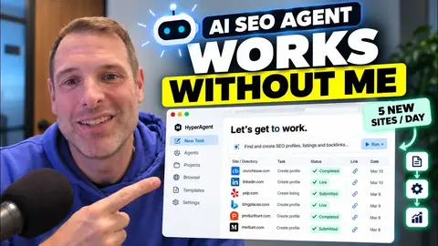

Building
19 builds since Dec 2025: 11 live, 8 shipped. Each one lists its stack, its receipts and the work it is documented to connect to.
19 builds, newest first
2026
18 builds
-
LiveNov 2026Onchain
ZeroHuman
An always-on service that sells small jobs to other AI agents. Agents pay the ENS name zerohuman.eth 0.0001 ETH and get the result back in a transaction from the same name. No account, no API, no human in the loop.
- AI Agents
- Ethereum
- ENS
- ERC-8004
- TypeScript
- Railway
-

ShippedNov 2026Film & video
Returning Your Things
On a snowy winter night, a man crosses the city to return his ex’s belongings. A dialogue-free short film about love, memory, and letting go.
- Short Film
- AI-generated imagery
-

ShippedNov 2026Onchain
AI agent economy on Ethereum
Two autonomous AI agents with their own Ethereum wallets. The seller advertised services through ENS; the buyer found the catalog, paid in ETH, and received the work in a second mainnet transaction.
- AI Agents
- Ethereum
- ENS
- Ollama
-

ShippedOct 2026Film & video
AI explainer producer
Built an AI agent that researches, fact-checks, scripts, and produces educational videos using a virtual presenter. Tested it with a published ENSv2 explainer.
- AI Agents
- HyperAgent
- HeyGen
- Video Production
Opens on kenashe.ai
-

LiveOct 2026Web & search
Autonomous SEO agent
An AI agent that finds five new website opportunities daily, creates professional profiles, verifies accounts through its own Gmail inbox, and tracks everything without manual intervention.
- HyperAgent
- AI Agents
- Automation
- SEO
- Gmail
Opens on kenashe.ai
-
LiveOct 2026Web & search
X article toolkit
A model-neutral toolkit that lets any AI agent use the same research-backed workflow for X Article headlines, hooks and covers.
- GitHub
- Markdown
- Python
- JSON Schema
- GitHub Actions
- Agents
Opens on kenashe.ai
-
ShippedOct 2026Film & video
AI UGC video lab
Ported an open-source UGC skill into Hyperagent, generated 50 locked-identity ad concepts, then rendered and QA’d a fake raccoon-security campaign across 31 video generations.
- HyperAgent
- AI Video
- Agents
- Gemini
- ffmpeg
Opens on kenashe.ai
-
LiveSep 2026Agents & automation
Media pitch triage
An AI media-opportunity system that screens journalist requests, applies a reusable scoring skill, tracks state in Google Sheets, and monitors submitted pitches for published outcomes.
- ChatGPT Skills
- Agents
- Gmail
- Google Sheets
- Automation
No write-up for this one
-
LiveSep 2026Web & search
Rebuilding the image pipeline
Rebuilt KenAshe.ai’s image pipeline: migrated 2,083 PNGs to WebP, added responsive inline images, and cut the current image source tree by 95%.
- Astro
- WebP
- sharp
- GPT Image 2
- Vercel
- GitHub Actions
Opens on kenashe.ai
-
LiveSep 2026Agents & automation
VetStack
First Grok Bot I published. A military and veteran savings desk that finds current discounts and benefits that actually apply, without collecting IDs or running a 20-question intake.
- Grok Bot
- xAI templates
Opens on kenashe.ai
-
ShippedAug 2026Agents & automation
AI werewolf / social deduction lab
Built a cast of 9 AI characters with distinct personalities, relationships, and hidden roles, then had them play a Traitors-style social deduction game where they form alliances, deceive, and vote each other out.
- HyperAgent
- Fable 5
- Multi-Agent
- Social Simulation
Opens on kenashe.ai
-
Publishing pausedJun 2026Web & search
Autonomous AI blog
Scans the day's AI sources, clusters them into distinct stories, and publishes only the drafts that clear an editorial quality gate, without manual approval.
- GitHub Actions
- n8n
- Claude Opus 4.8
- GPT-5.5
- Gemini 3.1 Pro
- pgvector
-
LiveJun 2026Agents & automation
Geo-targeted affiliate site
Auto-detects each visitor's country and language, then serves the right offers in their language. Generated entirely from a spreadsheet.
- Cloudflare
- GitHub
- HyperAgent
- Fable 5
No write-up for this one
-
LiveJun 2026Agents & automation
Agent-driven site design and deployment
Used HyperAgent to build a live business site and deploy it to GitHub Pages with a custom domain, agent-driven end-to-end.
- HyperAgent
- GitHub Pages
- Web3Forms
No write-up for this one
-
ShippedJun 2026Agents & automation
Sir Pitches-a-lot
An agent with one job: pitch Lucky Domains to prospective clients. Built in an afternoon, pitched a real target live.
- HyperAgent
- Airtable
- Claude Opus 4.8
Opens on kenashe.ai
-
LiveMay 2026Web & search
kenashe.ai
This site. Originally built end-to-end with Claude Code, reviewed by Codex, shipped in a day.
- Astro
- Tailwind
- MDX
- Vercel
No write-up for this one
-
LiveMay 2026Agents & automation
Daily email to myself
Morning brief at 6 AM: weather, tickers, a dad joke, and 300 words on a rotating topic.
- Python
- Claude API
- Mac Mini
No write-up for this one
-
ShippedFeb 2026Agents & automation
Six-agent email response team
A coordinator plus sentiment, research, draft, and QA agents that turn customer support emails into reviewed replies.
- Cassidy AI
- Claude
- ChatGPT
No write-up for this one
2025
1 build
-
ShippedDec 2025Agents & automation
Personal assistant chatbot
A chat agent wired to Gemini that searches email and answers questions on weather, the forecast, and local news.
- n8n
- Gemini
- Gmail
- Weather + news APIs
No write-up for this one